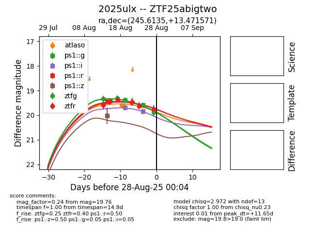

Target 2025ulx at 2025-08-28 02:15, see:
FINK: fink-portal.org/ZTF25abigtwo
Lasair: lasair-ztf.lsst.ac.uk/objects/ZTF25abigtwo
ALeRCE: alerce.online/object/ZTF25abigtwo
TNS: wis-tns.org/object/2025ulx
YSE: ziggy.ucolick.org/yse/transient_detail/2025ulx
alt names
ZTF25abigtwo (ztf,fink)
2025ulx (tns,yse)
coordinates:
equatorial (ra, dec) = (245.6135,+13.47157)
galactic (l, b) = (28.4227,+39.05462)
photometry
last atlaso=19.58, ps1::g=19.60, ps1::i=19.85, ps1::r=19.45, ps1::z=20.02, ztfg=19.88, ztfr=19.76
1 atlaso, 2 ps1::g, 2 ps1::i, 1 ps1::r, 1 ps1::z, 5 ztfg, 6 ztfr detections
